Asked about the item on screen. The chat answered 12 in M and 2 in XXL, matching the database.
One chat question put 27 hoodie cards on the Products page (DB has 27), and a card click opens the item page.
Filter & sort toolbar: 102 → 27 in-stock hoodies, sorted $45 → $88. Bonus: quick-reply chips.
1. Chat checks the inventory level of an item
Goal: the assistant answers stock questions with the real count from the inventory table. It doesn't guess.
Steps
- Open the Yale Mom Crewneck product page and click Ask our assistant about this item.
- Ask
How many do you have left in a medium?
(no product named: the agent knows which page is open). - Follow up with
And how many in XXL?
and compare with the site's own size picker.
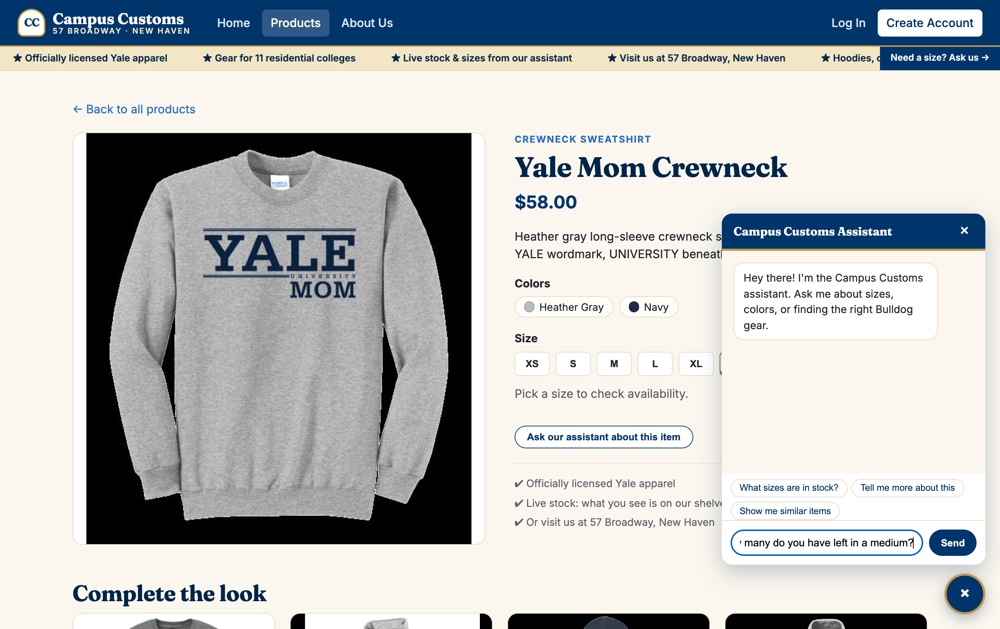
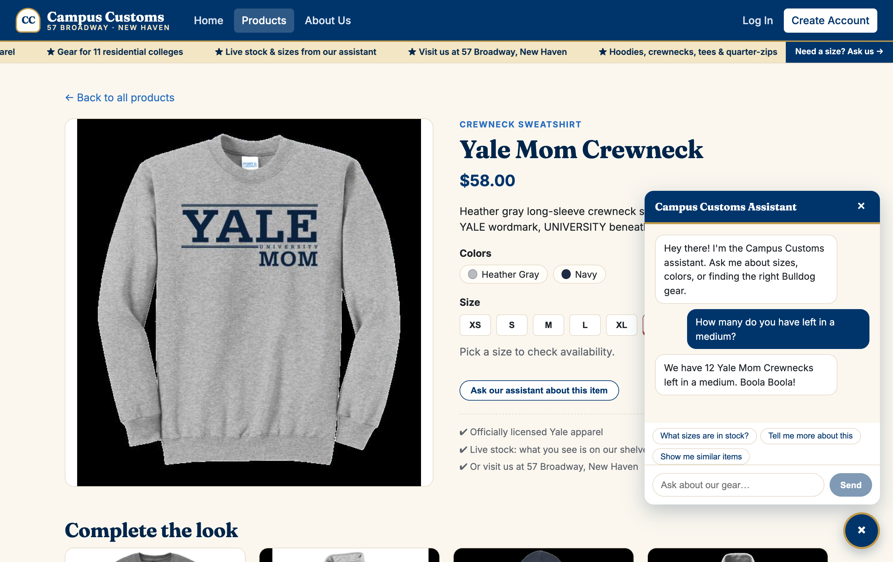
check_stock tool for this product and size M.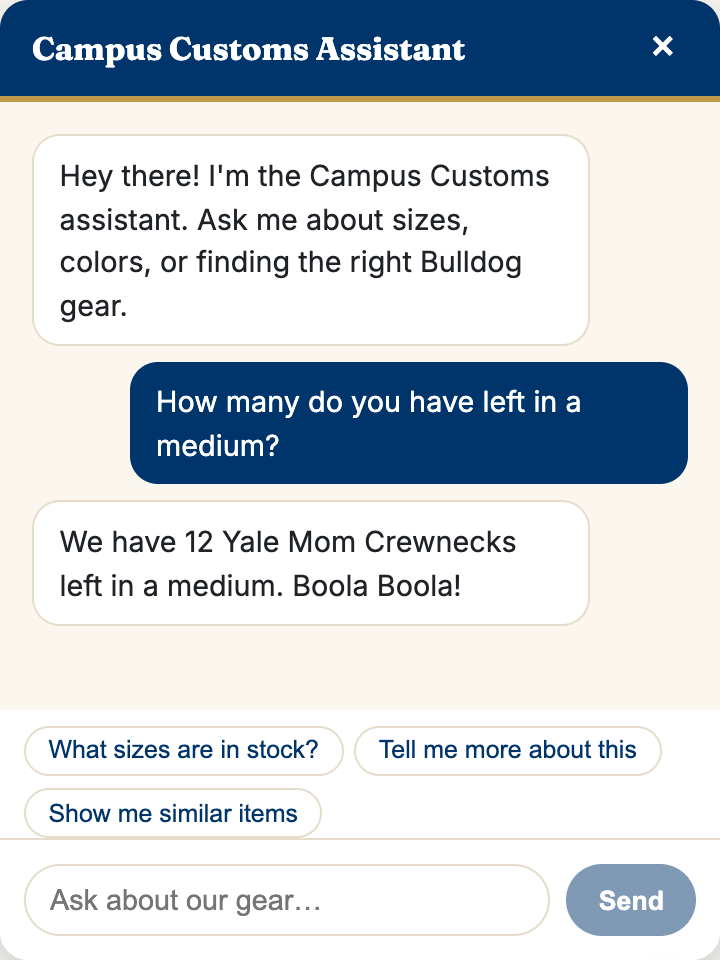
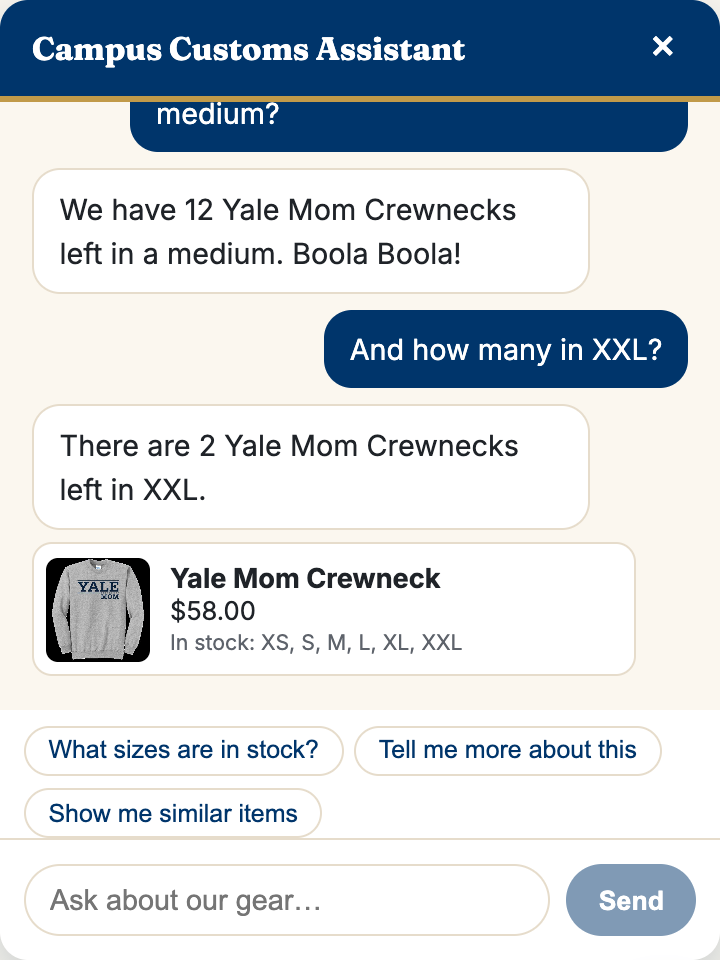
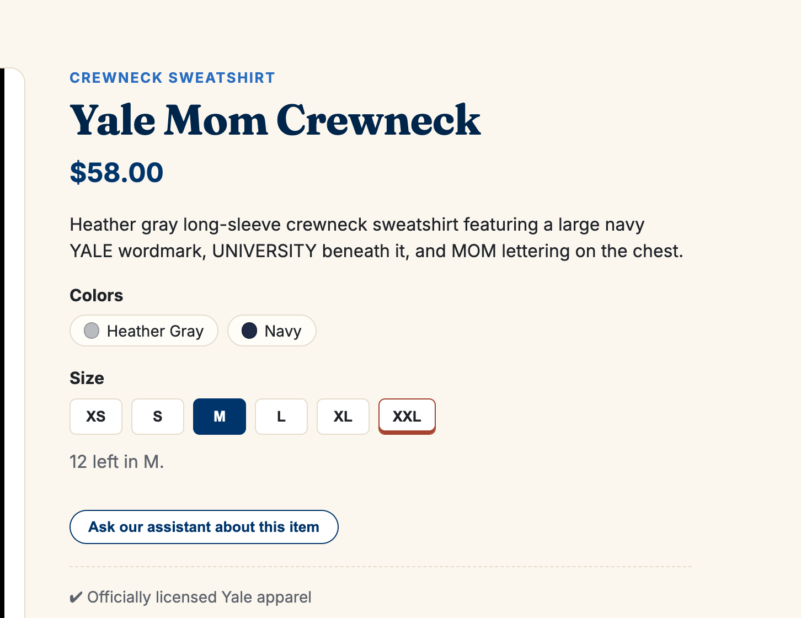
12 left in M., the same number as the chat. The XXL button has the low-stock underline (only 2 left).
Verified against the database
| Question | Chat said | DB: inventory.quantity | Result |
|---|---|---|---|
| Medium (M) | 12 left | yale-mom-crewneck, M = 12 | ✔ Match |
| XXL | 2 left | yale-mom-crewneck, XXL = 2 | ✔ Match |
2. Dynamic search results: cards appear on the page after a question
Goal: asking the chat what's available makes the agent return structured product matches (page_update), and the front end shows them as product cards on the site.
Steps
- From the Home page, open the chat and ask
What hoodies are available?
- Watch the site switch to the Products page and fill with the matches.
- Click the first result card to confirm the single-item page still opens.
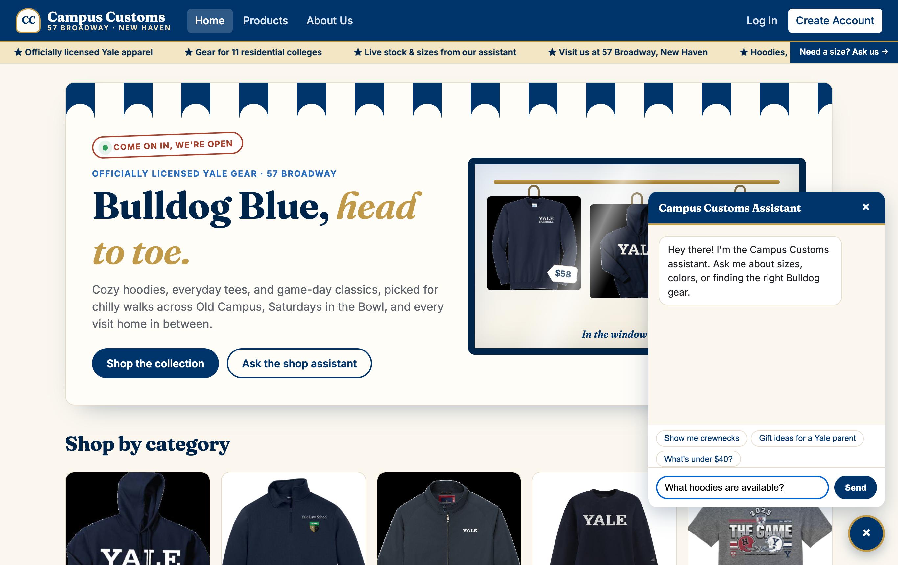
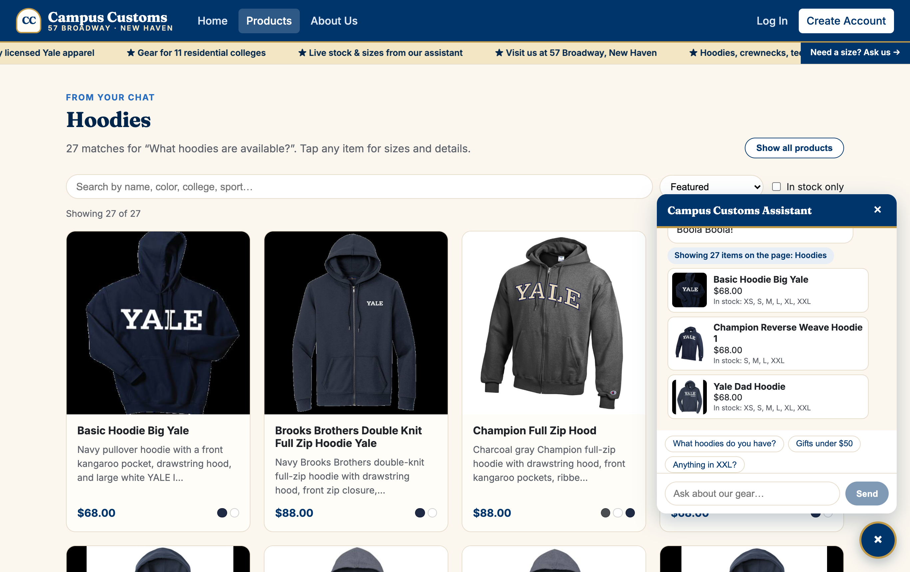
/products by itself, with the heading From your chat · Hoodiesand 27 product cards. The chat says
Showing 27 items on the page: Hoodiesand shows top picks.
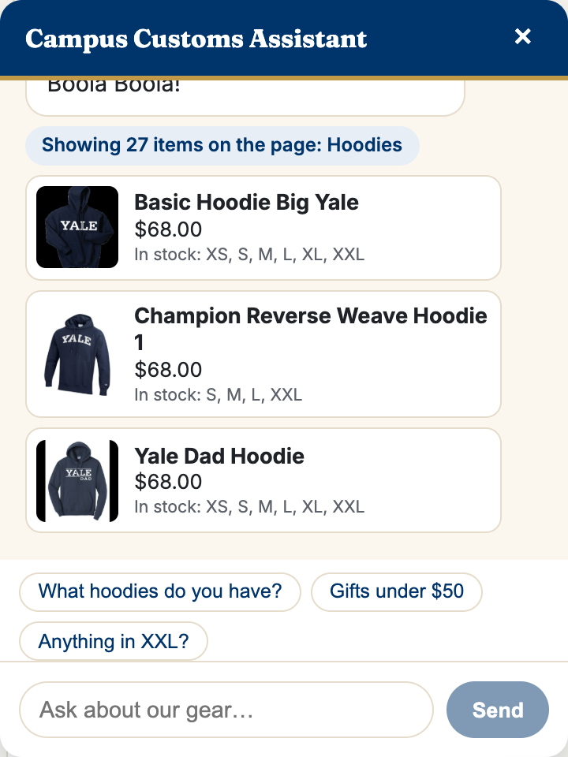
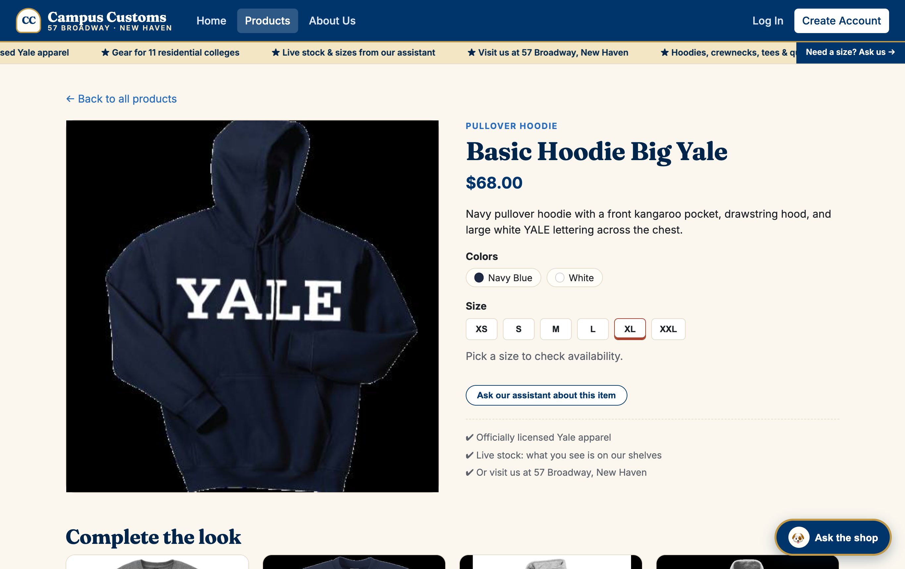
Basic Hoodie Big Yale) opens
/products/basic-hoodie-big-yale. The Problem 3 single-item page still works.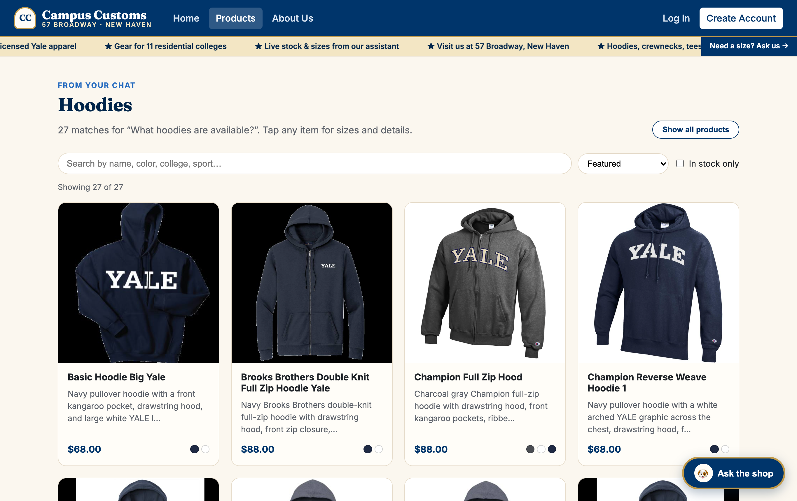
Verified against the database
| Check | Site showed | Expected | Result |
|---|---|---|---|
| Number of hoodie cards | 27 | 27 hoodies in catalogue | ✔ Match |
| Page updated without a reload | Home → /products, heading “Hoodies” | Results rendered from the chat | ✔ |
| Card click → item page | /products/basic-hoodie-big-yale | Single-item page opens | ✔ |
3. Problem 9 usability feature: filter & sort toolbar
Goal: shoppers can narrow the catalogue to the right rack in a few clicks, without scrolling 102 products or waiting for the AI.
Steps
- Open Products: all 102 items are shown.
- Click the Hoodies category chip, set sort to Price: low to high, and tick In stock only.
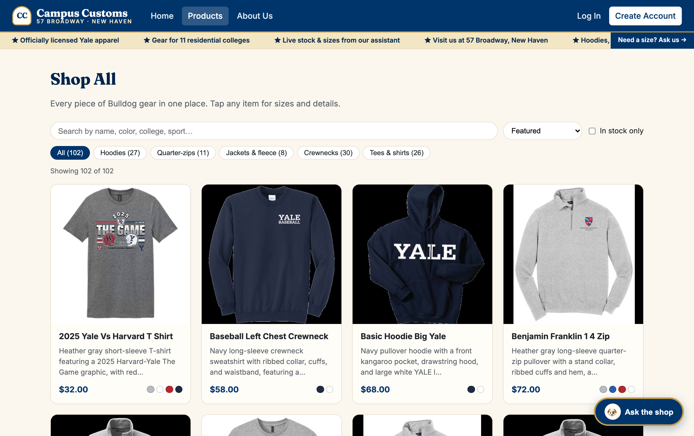
Showing 102 of 102, the full catalogue. The toolbar has a search box, sort menu, in-stock toggle and category chips with counts.
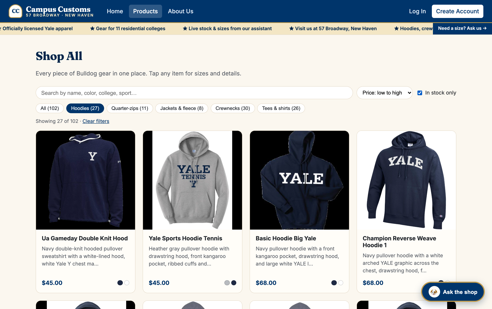
Showing 27 of 102 · Clear filters. Prices now run $45.00 → $88.00 in order.
Clear filtersresets everything in one click.
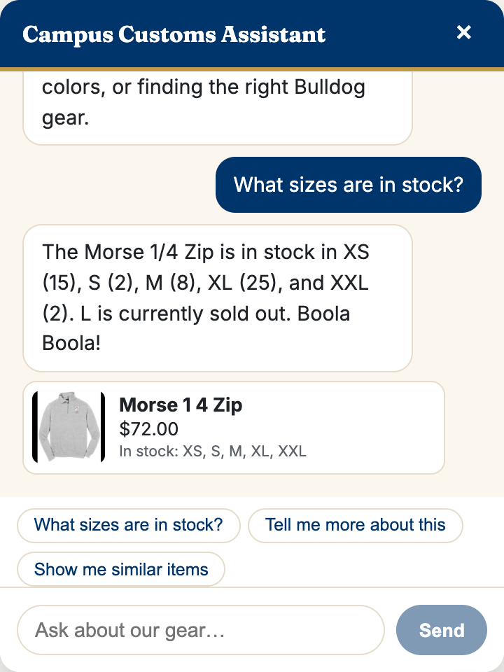
What sizes are in stock?answered: “The Morse 1/4 Zip is in stock in XS (15), S (2), M (8), XL (25), and XXL (2). L is currently sold out. Boola Boola!” DB: XS=15, S=2, M=8, L=0, XL=25, XXL=2 ✔
Verified
| Check | Site showed | Expected | Result |
|---|---|---|---|
| Hoodies + in stock count | 27 of 102 | 27 hoodies, all with stock > 0 in DB | ✔ Match |
| Price sort | $45.00, $45.00, $68.00 … $88.00 | Ascending | ✔ |
| Quick-reply chip stock answer | XS 15, S 2, M 8, L sold out, XL 25, XXL 2 | XS=15, S=2, M=8, L=0, XL=25, XXL=2 | ✔ Match |